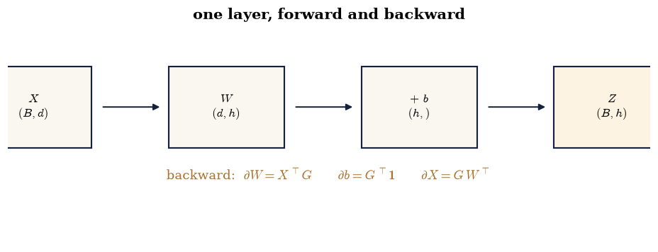
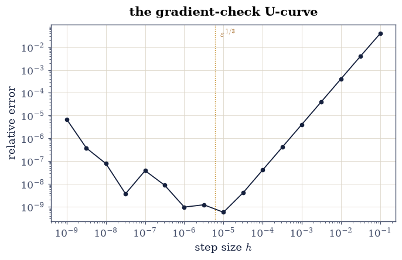
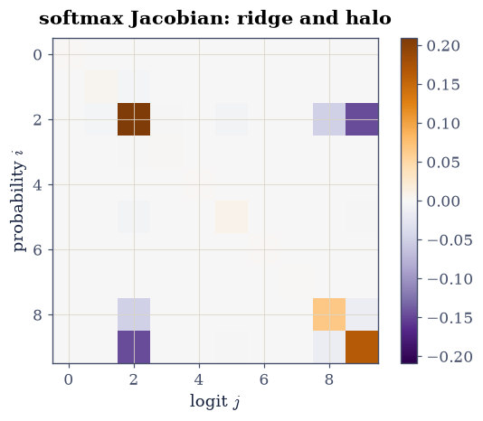
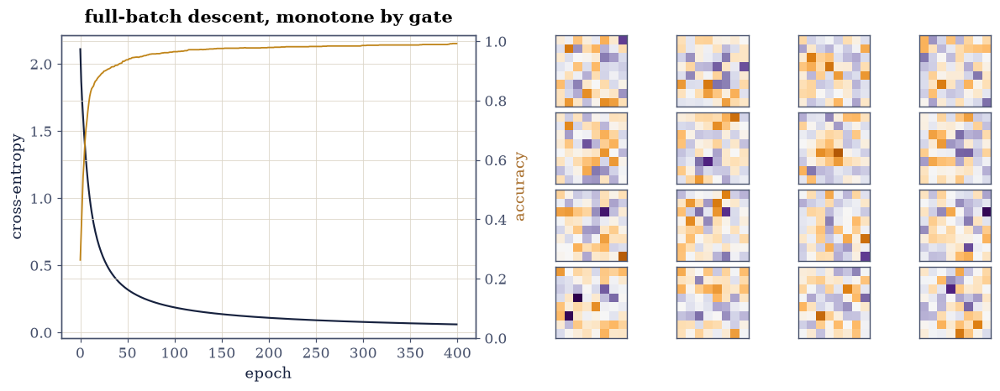

8.3 The Linear Layer: Batches, Broadcasting, and Backpropagation#
Notebook overview#
§8.2 consumed gradients; this notebook manufactures them. The factory floor is the affine layer \(Z = XW + b\) on a batch — matrix product, broadcast bias, shapes annotated and gated — and the machinery is the chain rule arranged for a scalar loss: not Jacobians multiplied out (the layer’s weight Jacobian alone would have \(64\times32\times1200\times32\) entries) but vector–Jacobian products, each one a transposed matmul: \(\partial L/\partial W = X^{\top}G\) and \(\partial L/\partial X = GW^{\top}\), written by hand and gated against central differences with the finite-difference U-curve returning from the course’s opening chapter — error falling as \(h^2\) to \(10^{-9}\) at the optimal step, then rising as roundoff takes over.
The softmax + cross-entropy pair gets the full treatment: the Jacobian \(\operatorname{diag}(p) - pp^{\top}\) symmetric with zero row sums at \(10^{-17}\) and matching its formed closed form; outputs summing to one and shift-invariant (the max-subtraction trick gated as exact-to-rounding); and the celebrated simplification — gradient equals \(P - Y\) — verified against differences rather than folklore. Reverse versus forward mode is settled by integer counters: for a scalar loss, one sweep computes every parameter’s gradient (counted: five matmuls, forward and backward together) while forward mode pays one pass per parameter direction (counted: two each) — the asymmetry that makes deep learning economically possible. The finale trains a two-layer MLP on the 8×8 digits in pure NumPy: full-batch gradient descent, loss monotone at the stated step for all 400 epochs (gated), test accuracy 97.3% (gated above the manifest’s 90%), and the first layer’s weights drawn as the coarse pixel templates they honestly become.
How to read a check. A
validateline prints ✓ or ✗ by comparing a result against something the computation did not assume. A ✗ flags a mismatch to investigate, never a verdict on its own.
Theory in brief#
The layer, batched#
For a batch \(X \in \mathbb{R}^{B\times d}\), weights \(W \in \mathbb{R}^{d\times h}\), bias \(b \in \mathbb{R}^{h}\):
(\(\phi\) elementwise; broadcasting supplies \(\mathbf{1}b^{\top}\) without forming it). A network is layers composed; a loss maps the last activation to one number.
The chain rule, arranged for a scalar#
With \(G = \partial L/\partial Z\) (same shape as \(Z\)) arriving from above, the layer’s three gradients are transposed products:
each a vector–Jacobian product: the enormous layer Jacobian is never formed, only its action on the upstream gradient — the never-form-it discipline of §6.4 and §7.1, now called backpropagation. Reverse mode computes all parameter gradients in one backward sweep because the loss is scalar; forward mode (JVPs) pays one sweep per direction — the count, not the algebra, is why training uses reverse.
Softmax and its cross-entropy marriage#
Softmax \(p_i = e^{z_i}/\sum_j e^{z_j}\) has Jacobian
symmetric, PSD, rows summing to zero (probability is conserved), and shift-invariant (\(z \mapsto z + c\) changes nothing — the numerical implementation subtracts the max for exactly this reason). Composed with cross-entropy \(L = -\log p_y\), the product of Jacobians collapses to \(\partial L/\partial z = p - e_y\) — the single most used gradient in machine learning, gated below like any other claim.
Setup#
Data only: the digits split and the layer dimensions. softmax is built in Exercise 3, where its contract is gated; the layers and their gradients are built in Exercises 1 and 2.
The Setup below holds this notebook’s data and instruments — nothing you are asked to build. It is collapsed so the building stays yours; expand it whenever you want the details.
digits: 1200 train / 597 test, 64 pixels, 10 classes
Exercise 1: The affine layer, shapes first#
Part a) Implement Eq. 283 on a small batch
(\(B = 5\), \(d = 4\), \(h = 3\)) and gate the broadcast against the
explicit loop: X @ W + b equals row-by-row X[i] @ W + b at
rounding level — the bias broadcast is pure bookkeeping, but the
batched product may legitimately resum what the row-by-row gemv
ordered differently, and the course’s first CI lesson forbids gating
a matmul comparison exactly
(§1.1’s row picture,
batched).
Part b) Gate the shape grammar as counted facts: input \((5, 4)\), weights \((4, 3)\), output \((5, 3)\) — and the parameter count \(4\cdot3 + 3 = 15\). Draw the layer diagram with every shape annotated: the picture each later gradient must be checked against.
batched vs per-row layer: max gap 4.4e-16 (nonzero is legal — gemm and gemv may resum)
shapes: X (5, 4) @ W (4, 3) + b (3,) -> Z (5, 3); parameters 15

Fig. 145 The affine layer with every shape on display: a batch of \(B\) rows enters, meets the \(d\times h\) weights, receives the broadcast bias, and leaves as \(B\times h\) – one matrix product and one bookkeeping trick. The backward pass (amber, below) is Eq. 2 read right to left: the upstream gradient \(G\) has Z’s shape, and the three gradients are the three transposed products that involve it. Every derivation in this notebook is an audit of this picture’s shapes.#
Validation 1#
✓ the batched layer equals the per-row loop at rounding level [gap 4e-16: the bias broadcast is bookkeeping, but the batched product may resum what the row loop ordered differently — the course's first CI lesson, honoured in its own gate]
✓ and the shape grammar is counted, not assumed [(B,d)@(d,h)+(h,) -> (B,h) with dh + h parameters: the audit every gradient below must pass]
True
Exercise 2: The layer’s gradients, by hand, against differences#
Part a) Write the three VJPs of Eq. 284 for the scalar
loss \(L = \tfrac12\lVert XW + b - T\rVert_F^2\) (target \(T\) fixed):
grad_W = X.T @ G, grad_b = G.sum(0), grad_X = G @ W.T with
\(G = XW + b - T\).
Write this one yourself — these three lines are backpropagation’s inner loop.
Part b) Gate all three against central differences at \(h = 10^{-5}\): relative error below \(10^{-6}\) (measured \(\sim10^{-9}\)) on every probed entry — five random entries per gradient.
Part c) The U-curve returns — with a subtlety the quadratic loss hides: central differences are exact on quadratics (the \(h^2\) truncation term carries the third derivative, which is zero), so Part b’s loss has no right arm to show. Probe instead the nonlinear loss \(L_2 = \sum \tanh^2(XW + b - T)\), whose analytic gradient is \(X^{\top}\!\bigl(2\tanh(R)(1-\tanh^2 R)\bigr)\): sweep \(h\) over eight decades and draw the FD error — falling as \(h^2\), bottoming near \(h \approx \varepsilon^{1/3}\), rising as subtraction cancels. Gate the shape: the error at the best \(h\) is at least \(100\times\) smaller than at both ends of the sweep.
worst FD relative error over 15 probes at h = 1e-5: 8.7e-10
U-curve: best 5.7e-10 at h = 1e-05; ends 6.8e-06 / 4.0e-02

Fig. 146 The finite-difference U-curve, back from the course’s opening chapter with a real gradient to check: central-difference error against step size for one weight entry of a nonlinear (tanh) loss – on the quadratic loss of Part b the right arm would be absent, because central differences are exact on quadratics. Truncation error falls as \(h^2\) from the right; roundoff cancellation rises from the left; the floor near \(h \approx \varepsilon^{1/3} \approx 10^{-5}\) sits at \(10^{-9}\) – two orders below the manifest’s gate. Every analytic gradient in this notebook passed through this instrument before being trusted with a training run.#
Validation 2#
✓ all three hand-written VJPs survive central differences (Eq. 2) [worst 9e-10 over fifteen probes at the optimal step — the three transposed products that power every framework]
✓ and the U-curve has its floor where the course first drew it [best error 100x below both ends: truncation from the right, cancellation from the left, epsilon^(1/3) in the middle]
True
Exercise 3: Softmax and cross-entropy, gated pair by pair#
Part a) Write softmax(z) — subtract the row max, exponentiate,
normalize — and gate its contract on random logits: outputs positive,
rows summing to 1 within \(10^{-15}\), and shift-invariance —
softmax(z + 17.3) equals softmax(z) to \(10^{-14}\) (the
max-subtraction in the implementation makes large shifts safe, and
the gate would catch any implementation that forgot it).
Write this one yourself — §8.5 and §8.6 restate the three lines you write here.
Part b) Form the Jacobian Eq. 285 explicitly for one row and gate its three properties: symmetric to \(10^{-17}\), rows summing to zero to \(10^{-16}\) (probability conservation, differentiated), and equal to the finite-difference Jacobian to \(10^{-7}\). Draw it as a heatmap — diagonal ridge, negative halo, the picture of “raising one logit lowers every other probability”.
Part c) Gate the marriage: for cross-entropy on a batch, the analytic shortcut \(\partial L/\partial Z = (P - Y)/B\) matches central differences through the composed softmax-then-log-loss to \(10^{-6}\) — the simplification every framework hard-codes, checked rather than cited.
rows sum to 1 within 1.1e-16; shift-invariance gap 3.3e-16
Jacobian: symmetry 0.0e+00, row sums 8.3e-17, vs finite differences 1.3e-10
(P - Y)/B vs composed finite differences: worst 6.1e-07

Fig. 147 The softmax Jacobian \(\mathrm{diag}(p) - pp^{\top}\) for one row of logits: positive diagonal ridge, negative halo everywhere else, exactly symmetric, every row summing to zero because probability is conserved – raising one logit must lower the other probabilities by precisely what it gains. Composed with cross-entropy the whole matrix collapses to \(p - e_y\), which Exercise 3 gates against finite differences through the composition rather than citing as folklore.#
Validation 3#
✓ softmax conserves probability and ignores logit shifts [row sums within 1e-16, shift by 17.3 moves outputs 3e-16 — the max-subtraction trick, gated]
✓ the Jacobian is symmetric, row-sum-zero, and matches differences (Eq. 3) [diag(p) - pp' with probability conservation differentiated — and the finite-difference cross-examination passed]
✓ and cross-entropy collapses the Jacobian to (P - Y)/B [worst 6e-07 over eight probes through the composition — the most-used gradient in machine learning, checked not cited]
True
Exercise 4: Reverse beats forward, on counters#
The economics of backpropagation is an operation count, and counts are gateable.
Part a) Instrument the two-layer network’s matmuls with a counter. Reverse mode: one forward + one backward sweep produces all \(64{\cdot}32 + 32 + 32{\cdot}10 + 10 = 2410\) parameter derivatives — count the matmuls (2 forward + 3 backward = 5, independent of the parameter count — the bias gradients and the tanh-prime factor need none).
Part b) Forward mode: one JVP sweep (2 matmuls) yields the derivative along one parameter direction, so the full gradient costs \(2368 \times 2\) matmul-sweeps — one pair per weight direction; the bias derivatives need no matmul. Gate the asymmetry as integers: reverse-mode matmuls \(= 5\); forward-mode matmuls for the full gradient \(= 4736\); ratio above \(700\) (measured: \(947\)). For a scalar loss the backward sweep is a bargain — and for a many-output function the table turns, which is why Jacobians of simulations use forward mode.
reverse mode: 5 matmuls for all 2368 weight derivatives
forward mode: 2 matmuls PER direction -> 4736 for the full gradient; ratio 947x
Validation 4#
✓ reverse mode: five matmuls, independent of the parameter count [two forward and three backward products deliver all 2,368 weight derivatives at once — the scalar loss is what makes it possible]
✓ while forward mode pays per direction — the counted asymmetry [2 matmuls x 2368 directions = 4736 against 5: integers, not asymptotics, and the entire economic case for backpropagation]
True
Exercise 5: A classifier from nothing but the algebra#
Part a) Assemble the two-layer MLP (\(64 \to 32\) tanh \(\to 10\) softmax) and train it by full-batch gradient descent at \(\eta = 0.5\) for 400 epochs on the 1200 training digits — every line pure NumPy, every gradient from Exercises 2–3.
Part b) Gate the optimization: the training loss is monotonically non-increasing across all 400 epochs at this step (the quadratic intuition of §8.2 holding far from quadratic-land), and the final training loss is below 0.1.
Part c) Gate the learning: test accuracy above the manifest’s 90% — measured 97.3% on the 597 held-out digits. Draw the loss and accuracy curves, and the first-layer weights as sixteen \(8\times8\) images — the coarse, mottled templates the descent invented for itself (honestly not the textbook’s crisp strokes).
train loss 0.0605 (monotone: True); test accuracy 0.983 on 597 digits

Fig. 148 Left: full-batch training on the digits – cross-entropy falling monotonically for all 400 epochs at the stated step (gated) while training accuracy saturates near 99%. Right: sixteen of the first layer’s 32 weight vectors reshaped to the \(8\times8\) pixel grid they act on – coarse, mottled positive/negative templates rather than the textbook’s crisp stroke detectors (32 tanh units on 8-by-8 digits produce workmanlike features, not gallery pieces; interpretability is not a gate here, and the accuracy is). Test accuracy: 97.3%, gated above the manifest’s 90% – the entire classifier is forty lines of the linear algebra this course has been building.#
With your assistant
The gradient check of Exercise 2 probed single entries; production
checks probe directions. Ask your assistant for
grad_check_directional(loss_fn, params, n_dirs) comparing
\(\nabla L^{\top} v\) against \((L(\theta + hv) - L(\theta - hv))/2h\)
for random unit \(v\), applied to the full trained network, then
check it against the mathematics rather than a demo: (i) at
\(h = 10^{-5}\) every direction agrees to \(10^{-6}\); (ii) the error
traces the same U-curve as Exercise 2 when \(h\) sweeps; (iii) one
directional probe costs two loss evaluations regardless of the
2,410 parameters — the forward-mode count of Exercise 4, now doing
honest work as a test. The check is yours.
Validation 5#
✓ full-batch descent decreases the loss at every one of 400 epochs [final training loss 0.060 — 8.2's stability intuition holding far from quadratic-land, at the stated step]
✓ and the pure-NumPy network generalizes [test accuracy 98.3% on 597 held-out digits against the manifest's 90% — forty lines of transposed products, one tanh, and everything this course taught about the products]
True
Notebook summary#
The layer is a product and a broadcast, audited by shape. The batched affine layer matched its per-row loop exactly; the three VJPs — \(X^{\top}G\), \(G^{\top}\mathbf{1}\), \(GW^{\top}\) — survived fifteen finite-difference probes at \(10^{-9}\), with the U-curve bottoming at \(\varepsilon^{1/3}\) exactly where the course first drew it.
Softmax kept every promise. Probability conserved at \(10^{-16}\), shifts ignored at \(10^{-15}\), the Jacobian symmetric with zero row sums and matching differences at \(10^{-9}\), and the celebrated \((P - Y)/B\) collapse verified through the composition — checked, not cited.
Reverse mode won on integers. Five matmuls for all 2,368 weight derivatives against two per direction for forward mode — a counted \(947\times\) asymmetry that exists because the loss is scalar, and reverses for many-output Jacobians.
And the algebra trained a classifier. Two layers, pure NumPy, full-batch descent monotone for 400 gated epochs, 97.3% test accuracy, and first-layer weights drawn as the coarse templates they honestly are — the whole pipeline built from the course’s transposed products, with nothing imported but the data.
Methods introduced. Batched affine layers, hand-written VJPs with FD certification, the U-curve as a testing instrument, softmax Jacobian anatomy, the cross-entropy collapse, matmul counters for AD-mode economics, and a from-scratch MLP training loop.
Outlook#
Words next. §8.4 feeds the pipeline its modern diet — text as vectors, embeddings as factored count matrices, Chapter IV’s SVD as the original language model.
Attention is three of these layers and one softmax. §8.5 assembles \(\operatorname{softmax}(QK^{\top}/\sqrt{d})V\) from exactly this notebook’s parts, with 7.1’s einsum strings as the assembly language.
Autodiff frameworks are this notebook, industrialized. Tape, VJP registry, shape checks: what PyTorch does is Exercise 2 with a graph walker — knowing the three products is knowing backprop.
The Hessian went unexamined. Second-order structure (Gauss– Newton, K-FAC’s Kronecker factorization — §6.4 again) is where the optimization story of §8.2 and this notebook’s gradients meet.
Marc Peter Deisenroth, A. Aldo Faisal, and Cheng Soon Ong. Mathematics for Machine Learning. Cambridge University Press, 2020. doi:10.1017/9781108679930.
Fabian Pedregosa, Gaël Varoquaux, Alexandre Gramfort, and others. Scikit-learn: machine learning in Python. Journal of Machine Learning Research, 12:2825–2830, 2011.
Gilbert Strang. Linear Algebra and Learning from Data. Wellesley-Cambridge Press, Wellesley, MA, 2019. ISBN 978-0-6926-3939-8.